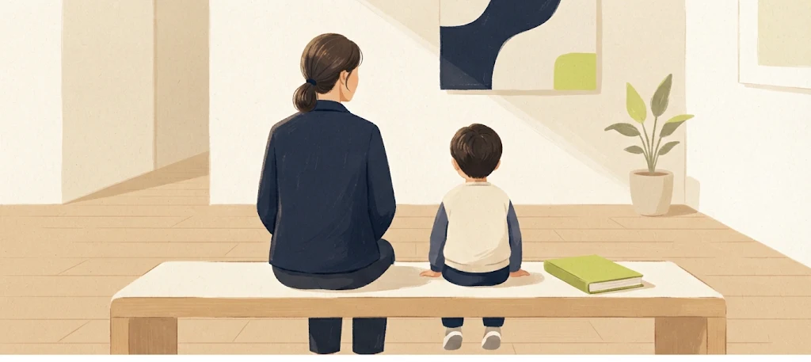

호주 아이 혈액검사
가기 전에 확인할 것
NSW 채혈실 예약과 금식,
아이에게 설명할 말까지.
출처: NSW Health Pathology
Patient FAQs

AI로 만든 설명용 일러스트예요.
실제 인물·장소·진료 장면이 아니에요.
NSW 채혈실 예약과 금식,
아이에게 설명할 말까지.
출처: NSW Health Pathology
Patient FAQs

AI로 만든 설명용 일러스트예요.
실제 인물·장소·진료 장면이 아니에요.
일반 검사는 예약 없이 가기도 해요. 하지만 소아 채혈은 예약이 필요하거나 가능한 장소가 따로 있을 수 있어요. 먼저 전화해요.
출처: NSW Health Pathology
Patient FAQs
검사 의뢰서는 채혈 담당자에게 보여줄 서류예요.
예약이 필요한지는 방문할 채혈실에 확인해요. 의뢰서를 받았다고 예약까지 끝난 것으로 생각하지 않아요.
출처: Healthdirect
Guide to blood testing
검사마다 준비가 달라요. 금식이 필요한지, 언제부터인지 담당 의사에게 확인해요. 먹는 약도 임의로 바꾸지 말고 검사 전 지시를 물어봐요.
출처: Healthdirect
Guide to blood testing
Sydney Children’s Hospital, Randwick
채혈: Kangaroo room, level 0
위치: Outpatients 근처
level 4는 검체를 분석하는 검사실이에요.
출처: SCHN
Randwick pathology
설명할 질문
왜 검사하는지
언제 가는지
어디로 가는지
무엇을 하는지
누가 함께 있는지
아이가 이해할 말로 짧게 설명해요.
출처: SCHN
Blood tests and venepuncture
채혈할 때 함께 볼 책이나 놀이를 아이와 골라요. 보호자는 곁에서 도울 수 있어요. 아이가 편해지는 방법을 채혈 담당자에게 알려주세요.
출처: SCHN
Blood tests and venepuncture
검사 결과는 검사를 요청한 의사에게 전달돼요. 언제 어떤 방법으로 설명을 들을지 미리 물어봐요. 온라인 기록에 모든 결과가 보이는 것은 아니에요.
출처: NSW Health Pathology
Results
채혈실: 아이 나이·검사명 전달
채혈실: 소아 채혈·예약 확인
담당 의사: 금식·약 복용 확인
접수처: 준비 서류·비용 확인
담당 의사: 결과 연락 방법 확인
출처: NSW Health Pathology, Patient FAQs
Healthdirect, Guide to blood testing
의뢰서를 받은 날,
함께 데려갈 보호자와 확인해요.
준비사항은 아이와 검사에 따라 달라요.
출처: Healthdirect
Guide to blood testing